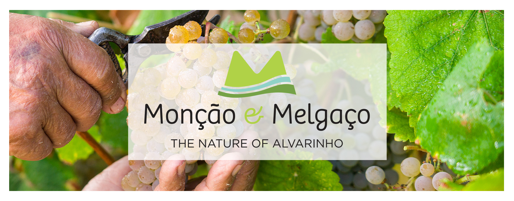
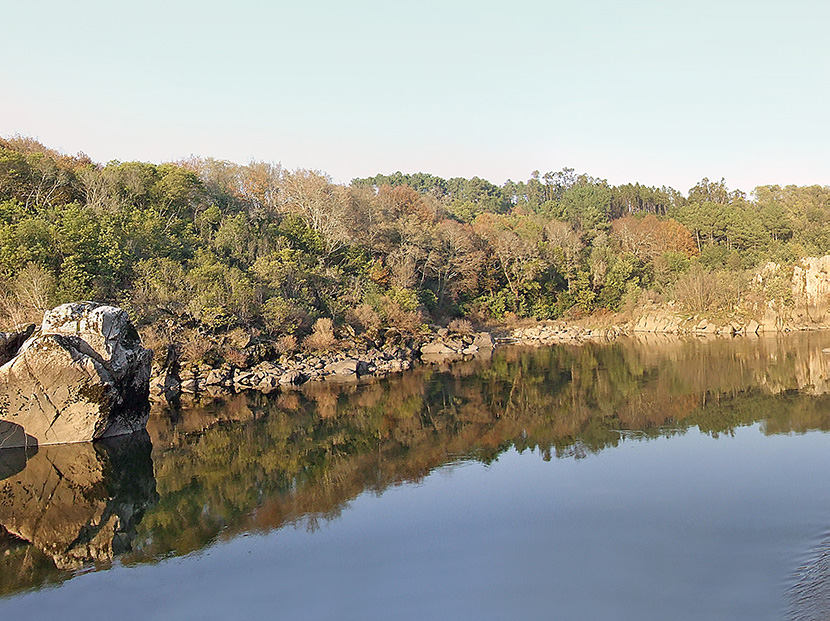
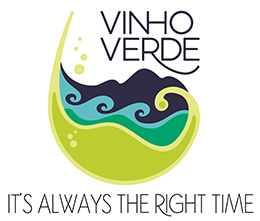
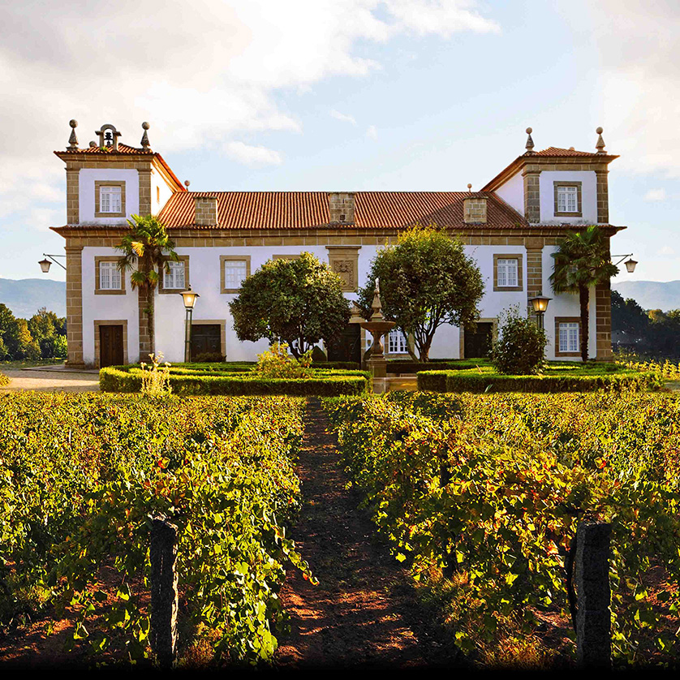

|
Monção & Melgaço - The Nature of Alvarinho
|  |
|
Monção and Melgaço
Wines You’ll Never Forget
Within the historic Vinho Verde region, established in 1908, the Monção and Melgaço subregion offers elements that are both timeless and profound. This territory, located in the northernmost reaches of Portugal, is home to some of the best white wines in the country, wines that awaken the senses with their quality, personality and penchant for evolving nobly in the bottle over many years.
The Vinho Verde region occupies the majority of northwestern Portugal. It is crisscrossed by scenic valleys that add depth and complexity to its wine production. At the northernmost point, the valley of the Minho River marks the place where Portugal begins both geographically and historically. From here, Monção and Melgaço unravel before your eyes in every curve of the path, granite stone window and curl of the vine.
Now bordering Spain, the villages of Monção and Melgaço were founded over 700 years ago. For many centuries, they were the first line of defense for the Kingdom of Portugal, a status that their ancient city walls and castles still attest to today. The winegrowing tradition in Monção and Melgaço has deep roots. Wine has been part of the daily life of the valley’s inhabitants since long before the country’s borders were established. By the 15th century, it was already much more than a local agricultural product. The famous “vinho de Monção” was eagerly sought by the English cod traders who lined the Portuguese coast.
|
|
|
|
THE TERRITORY
The Minho River separates this region from neighboring Rías Baixas, located in northern Spain. The slopes of the valley are blanketed with elegant, meandering vines that descend smoothly to the river’s edge. The soil is composed of granite that has been sanded down by millennia of erosion, shimmering as the sunlight hits its myriad textures. All around, the mountains loom majestically, enclosing the territory of Monção and Melgaço in a green amphitheater of stately hills that open onto the Minho, protecting the area from the harsh winds of the Atlantic and giving rise to cold, rainy winters and hot, dry summers. This exquisite natural enclosure creates the perfect conditions for the production of excellent wines.
Of the many different grape varieties that grow here, Alvarinho, which originated in the Minho river valley, is the most important. Present in nearly every white wine from Monção and Melgaço, the grape contributes significantly to its identity. Other varieties affirm their presence in the wines, including Trajadura and Loureiro among whites and Borraçal, Vinhão or Alvarelhão among reds.

THE PEOPLE
A wine region is not just made up of hills and valleys, soils and climates, vines and grapes. The genesis of a wine involves people above all. The people of In Monção and Melgaço have contributed over the centuries to shaping the profile of their territory and transmitting its history, culture and knowledge to later generations. The region contains more than 2,000 grapegrowers who tend 1,700 hectares of vineyards each year, tracking the flowering, birth and growth of the clusters; controlling the spread of diseases and pests; and caring for the vines through every step of the process, until the long-awaited moment when the grapes are harvested and become wine. Many of these farmers are also winemakers who give rise to the more than 250 wines with the Vinho Verde Monção and Melgaço certification.
Today, centuries-old practices passed down through generations are merged with scientific innovation. The vast majority of Monção and Melgaço producers are members of a new generation, rooted in history, but with advanced training in viticulture and enology. In the vineyard and cellar, they apply practices and concepts that combine tradition with modernity. Knowledgeable, dynamic, creative and attentive to environmental sustainability and biodiversity, these younger vintners are creating sublime wines that leave a lasting impression on wine lovers.
|
 |
|
THE WINES
Monção and Melgaço wines are unique, with characteristics that set them apart from all other wines, whether in the Vinho Verde region, in Portugal, or around the world. This does not mean, however, that they are the same as one another. In Monção and Melgaço, different styles of wine coexist, varying on the specific location where the grapes come from, the mixture of grapes varieties used, or the will of the producer. In a blend of Alvarinho and Trajadura, for example, we often find a light, cheerful, refreshing style, whereas combining Alvarinho and Loureiro might yield a more fragrant and elegant white.
The most ambitious wines are almost always made exclusively from Alvarinho. Here, too, the profiles are very diverse. There are more exuberant versions, with aromas and flavors that resemble tropical fruits; more contained examples, focused on citrus notes of orange and tangerine; and wines fermented in wooden barrels to build a fuller body, a creamy texture and intense flavor. There also the region’s fruity sparkling wines that that are gaining more devotees.
Despite their individual variations, the whites of Monção and Melgaço have important common denominators. They are intense, elegant and expressive. They have a strong identity that speaks to their sense of place. They are long-lived, evolving over time in the bottle to gain the complexity and refinement that is only achieved by truly great wines. And they are gastronomic—that is, they are perfect wines to pair with food.

THE TABLE
It is at the table that the wines of Monção and Melgaço reveal themselves best. Deeply versatile, they are suitable for a wide variety of dishes and occasions. Sparkling wines are the right choice for smoked oysters, salmon or swordfish. The blends of Alvarinho and Trajadura, or Alvarinho and Loureiro, are best accompanied by cooked seafood or grilled lean fish, such as sea bream, sea bass and sole. Alvarinho whites, with their intensity, balance and fruit expression, are perfect for deeply flavorful dishes such as seafood rice; baked snapper, corvina, or grouper; Caesar salad; or grilled lean meats like quail or chicken. Barrel-fermented Alvarinho, which is rich, dry and firm in acidity, recommends itself to a range of exceptional pairings, including cod dishes, fatty fish, pasta and grilled veal, as well as a classic plate of sheep's cheese and Iberian ham. Regardless of the dish or occasion, the wines of Monção and Melgaço offer an experience all their own, delivering a wealth of aromas and flavors that live on in memory. |
|
|
|
|